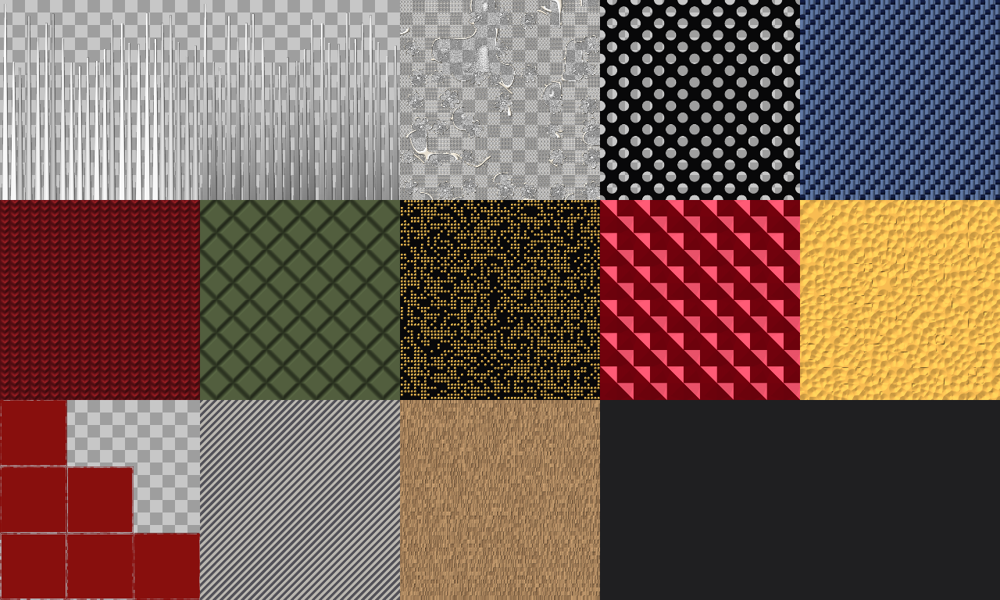
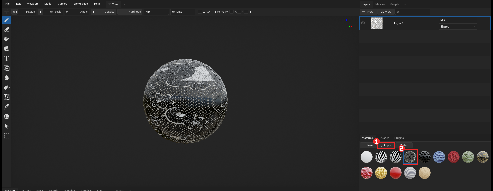
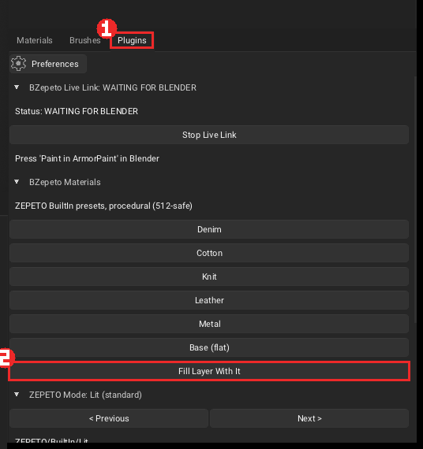
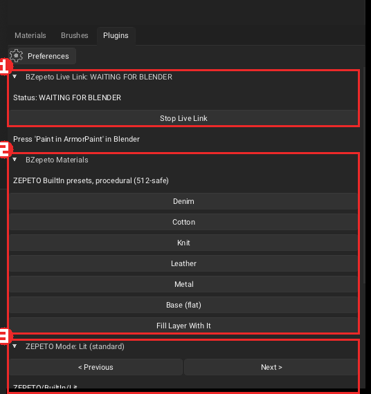

ArmorPaint
🇺🇸 English | 🇰🇷 한국어
The red boxes in the pictures are what you click, in the order of their numbers.
1. Install
- Unzip
BZepeto_ArmorPaint_<version>_win64.zipinto a new folder, e.g.C:\Tools\BZepeto_ArmorPaint(avoid Program Files — ArmorPaint cannot save its settings there; do not unzip over an older version or copy old plugins across) - Run
ArmorPaint.exeonce to check the window opens. The BZepeto plugins are already on, and the Browser opens straight on this install's Template folder (the node samples) - In Blender, set ArmorPaint Executable to this
ArmorPaint.exe(see Blender, Install)
Why a whole ArmorPaint build and not just a plugin? The live link needs a small change to ArmorPaint itself: a normal ArmorPaint stops updating the moment you click back into Blender. The build is compiled from ArmorPaint's zlib-licensed source, and every change is marked in the source (
BZepeto (altered source)).
2. New to ArmorPaint? Start with the node samples
The Template folder in the ArmorPaint folder has a finished material (.arm) for each of the 13
BZepeto nodes, already wired into colour, opacity, height, metallic and roughness the way ZEPETO items
use them. Template\_Overview.png shows them all:

Put a sample on your item (3 steps)
- Drag an
.armfile from theTemplatefolder onto the ArmorPaint window — or press Import ① in the Materials panel (bottom right) and pick it - The material appears in the Materials panel: click it ②

- Open the Plugins tab ① and press Fill Layer With It ② — the whole layer takes the material. To paint it only in places, use the brush instead

Changing a sample — double-click the material to open its nodes. Most samples go node → Mix RGB → Base Color: change the two colours of the Mix RGB node to recolour without touching the pattern, or change the values on the BZepeto node:
| File | ZEPETO shader | Try changing |
|---|---|---|
| 01 Hair Strands | HairAlpha | Strands, Taper, Length Variation, Seed |
| 02 Hair Root to Tip | HairAlpha | Root, Tip, Grain |
| 03 Floral Lace | Lit (transparent) | Motif Scale, Net Density, Thread, Motifs |
| 04 Lace Mesh | Lit (transparent) | Scale, Hole |
| 05 Weave Denim | Cloth | Scale, Pattern (0 plain, 1 twill, 2 satin), Contrast |
| 06 Knit Wool | Cloth | Scale |
| 07 Quilt Puffer | Lit | Scale, Line |
| 08 Sequins | Sparkle | Scale, Density, Seed |
| 09 Gem Facets | CustomEnv | Facets, Scale |
| 10 Hammered Metal | Lit (metal) | Scale |
| 11 Edge Wear | Lit | Amount, Break Up (reads the mesh edges — little shows on a flat face) |
| 12 Toon Hatching | Toon | Scale, Angle, Width |
| 13 Fur Strands | Fur | Scale |
- Hair (01, 02) is grey on purpose: the app multiplies in the hair colour the user picks
- Lace (03, 04) is transparent: turn Transparent on in the ZEPETO Mode panel so the alpha is exported
- Every pattern is procedural, so it stays sharp at ZEPETO's 512 px (256 px recommended)
3. Paint while you model (live link)
- In Blender select the item and press Paint in ArmorPaint
- ArmorPaint opens with the item; the BZepeto Live Link panel ① in the Plugins tab reads CONNECTED (before that: WAITING FOR BLENDER)
- With Auto Push on in Blender, your edits are sent again 0.8 s after you stop — the paint layers stay

An item without a material gets a ZEPETO-ready one on the way out.
Animated (pose clip) — turn it on in Blender's ArmorPaint panel to send the item with its armature and action (e.g. a ZEPETO animation clip). Scrub ArmorPaint's timeline to the pose where a seam stretches and paint there.
Vertex colours → Color ID — ArmorPaint's Color ID tool (C) reads a texture, not vertex colours. With Vertex Colours as Color ID on in Blender's ArmorPaint panel (on by default), Paint in ArmorPaint bakes the item's vertex colours into a Color ID map and sends it along; ArmorPaint makes it the Color ID map by itself. Press C in ArmorPaint and click a colour region to paint only inside it. Set outfits (UDIM) keep each tile apart. No map is made when the item has no vertex colours, or just one.
A material on a Color ID region
1. Press C and click the colour region (the view shows the Color ID map)
2. In Layers, pick the paint layer of that part's material group
3. In Materials, pick the material (a cloud material: drop it on an empty spot in Materials to add it)
4. Click the region with the Fill tool (bucket): the whole material (colour, roughness, normal...) goes
inside the picked region only. The brush stays inside it too
5. For another region, pick again with C
Set outfits (UDIM) — an item whose top and bottom have their own materials opens as one object per
tile, item.1001, item.1002. Each tile is painted on its own and sends its own texture set
(item_base.1001.png ...). The Blender side: Set outfits.
Blender materials — the materials you used in Blender appear in the Materials panel with the same name and colour, each with a fill layer of its own (on its own tile for a set outfit). They are made once, the first time the item opens; after that your paint layers are left alone.
Layers — each material is one group (folder) in Layers, named after it: collapsed, you see one
row per material; open it and there are <material> fill (the material's colour) and <material> paint
(the layer you paint on), both painting only that material's tile mesh. Fill layers take no brush strokes
(ArmorPaint's rule), so paint on paint — the last material's paint is selected when the item opens.
To paint another material, click the paint in its group.
Brush colour — ArmorPaint paints with the selected material (so does Layers + New → Paint
Layer). The item opens with the Swatch Color material selected, so the colour you pick in Swatches is
what the brush paints. Pick another material in Materials and the brush paints that material; to go back to
colour, press Brush: Swatch Color in the Plugins tab.
Mixing materials in a group — pick the material to mix in Materials (a cloud material: drop it on an
empty spot in Materials to add it), click a layer of the material's group in Layers, then press Add
Material to Group:
ArmorPaint's own tools lay materials out the same way — + New → Fill Layer, a material dropped on the
viewport or in Layers, Materials right-click → To Fill Layer:
- a group row (or nothing in a group) selected → a new group named after the material, with fill + paint
- a layer inside a group selected → mixed into that group with a black mask
A layer made in, or dragged into, a group follows the group's mesh (tile) by itself. A layer set to Shared
(bottom-right box) paints every mesh, and the tiles of a set outfit share the same UV square, so it would change
the other tiles too.
Swapping a material (cloud, Template) — drag a material from the cloud or the browser onto that material's group (or its fill layer) in Layers or its icon in Materials: it replaces the material instead of adding one. The name and the fill layer stay, so everything using the material (its tile, for a set outfit) changes at once and keeps its name on the way to Blender and Unity. Dropped on empty space it is added as before.
4. BZepeto Materials (smart materials)
In the BZepeto Materials panel ②: Denim, Cotton, Knit, Leather, Metal, Base. Press one, then Fill Layer With It, and paint on top. They are procedural, so they stay crisp at 512 px, and they already match ZEPETO's texture channels.
The BZepeto Library — the material library
The BZepeto Library panel in the same Plugins tab holds 22 smart materials, 6 generators, the quick setups and the name matching. Everything is procedural, so nothing blurs at ZEPETO's 512 px (256 px recommended), and colour, roughness, metal and relief (normal) land in one go.
Smart materials — pressing one creates a ZEPETO <name> material. Apply it to the whole layer
with Fill Layer With It, or paint with it:
| Group | Materials |
|---|---|
| Fabric | Wool · Canvas · Linen · Suede · Corduroy · Tweed · Velvet · Satin · Sequin · Camo · Denim Wash · Crushed Velvet · Tulle Net (transparent) |
| Metal / Hard | Gold · Chrome · Copper · Rusty Iron · Painted Metal · Brushed Aluminium · Carbon Fiber · Gem · Rose Gold · Patina Copper · Gold Sequin |
| Other | Glitter · Wood · Marble · Plastic · Rubber · Neoprene · Cork · Terrazzo · Chalk Paint |
- Velvet wants the ZEPETO Mode set to Cloth, and Gem to CustomEnv (the status line says so too)
- To recolour, double-click the material to open its nodes and change the two colours of Mix RGB — the pattern stays
Generators — one click makes a fill layer whose opacity is the pattern: Dirt · Bleach Fade · Mud · Rust · Chipping · Sparkle Dust. The layer shows only where the pattern is. Add a black mask (right-click the layer → Add Black Mask) and paint white where it should show, or paint on the layer to add more. Colour and roughness live in the material's nodes.
Mesh-driven generators — Edge Wear and Cavity Dirt read the mesh's curved areas in the shader: they appear on edges and in crevices only, like Substance's generators. Adjust them in the material's nodes, or paint the layer's mask to place them.
Filters — adjustment layers that edit everything painted below: Blur · Sharpen · Invert · HSL Shift · Levels · Warm Tint. Change the values in the filter layer's nodes and the whole stack below follows (the Substance filter-layer way).
Quick Setup — one button per kind of ZEPETO garment applies the ZEPETO Mode and a matching material together: Top / T-Shirt · Hoodie / Knit · Jeans / Pants · Skirt / Dress · Coat / Outer · Shoes · Gem / Jewelry · Hair · Toon Item. Shoes, for example, picks the Lit mode plus the Leather material, Gem / Jewelry CustomEnv plus Gem. Hair only switches the mode (paint the strands grey), Toon Item fills Toon's neutral map values.
Match Materials by Name — an item sent from Blender brings its material names along. Match
Materials reads them and rebuilds each material's nodes from the name: gold_trim→gold,
denim→denim, leather→leather, knit→knit, pearl→pearl, sole→rubber and so on. A material whose
name says nothing is left alone, and hair, fur, eyes, mouth and lace are never touched — their
shader modes own them. The panel reports Matched N, left M unchanged. Picked wrong? Press another
smart material and fill again.
5. ZEPETO Mode
The ZEPETO Mode panel ③ matches the item's ZEPETO shader (it follows the shader set in Blender; < Previous / Next > changes it by hand). The export then writes the maps that shader reads, and the panel lists what each channel means in that mode.
- Setup Base Layer (neutral values) — a fill layer with the mode's neutral values to start from
- Transparent (export base alpha) — keep the base colour's alpha (opaque items ship a smaller file)
- Emission map — export the glowing parts in their colour
- Viewport preview — a ZEPETO-like look of the mode in the Lit viewport (hair highlight bands, toon steps, pearl sheen, clear coat, glints). A close approximation, not the Unity shader itself
Hair: paint the strands in grey — the app multiplies them by the user's hair colour. Alpha = strands, Height = highlight shift (0.5 = none), Metallic = secondary highlight.
6. BZepeto nodes
In the material node menu under BZepeto ZEPETO:
| Node | |
|---|---|
| Hair Strands / Hair Root to Tip | strands with alpha, shade and highlight shift; root-to-tip light |
| Floral Lace / Lace Mesh | Chantilly-style lace (opacity, height, motif mask); simple mesh net |
| Weave / Knit / Quilt | fabric structures |
| Tartan Plaid / Gingham / Polka Dots | fashion check and stripe patterns |
| Sequins / Gem Facets / Hammered Metal | accessories and jewellery |
| Edge Wear / Toon Hatching / Fur Strands | wear, toon brush strokes, fur pattern |
| Grunge | stain and scuff mask (the dirt/wear building block) |
| Water Drops / Glow Bands | droplets, glowing stripes |
7. Stitches
- In Blender Edit Mode, select the seam edges
- Press Stitch Selected Edges — it shows "Will draw: N seam(s), M stitch(es)" first
- The stitches appear in ArmorPaint as their own layer, so you can recolour or erase them
| Setting | |
|---|---|
| Dash / Gap / Width | thread length, spacing and thickness in millimetres of the real item |
| Color / Roughness | thread colour and roughness |
| Target | ArmorPaint (a layer, recommended) or Blender (drawn on the material) |
A seam on the border of two UV islands is stitched on both pieces, like real clothing.
8. Sending the textures
| Button in ArmorPaint | |
|---|---|
| Send to Blender | Blender picks the textures up by itself (Auto Receive) |
| Send to Unity | goes straight into your ZEPETO Studio project |
| Send to Both | both |
| Size 512 / 1024 / 2048 / 4096 | size of the delivered textures — you keep painting at full resolution |
ZEPETO allows 512 px textures and 1 MB per item, which is why 512 is the default.